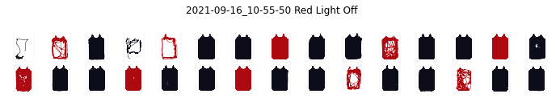
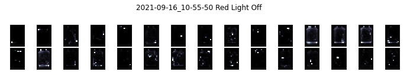
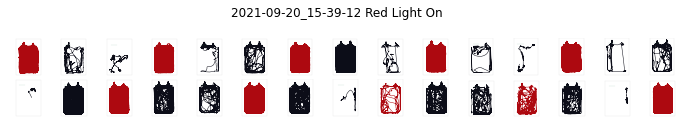
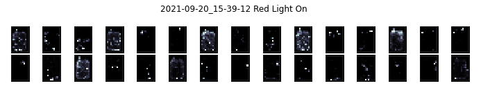
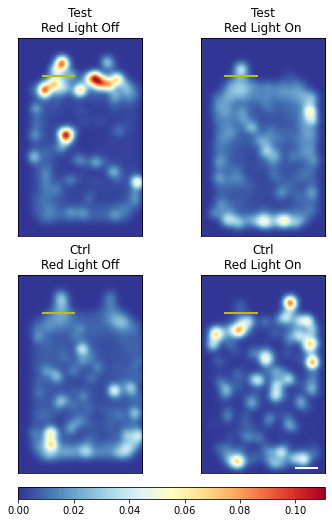
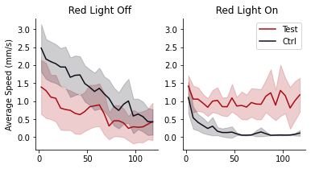
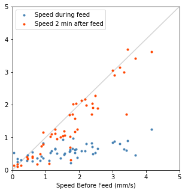
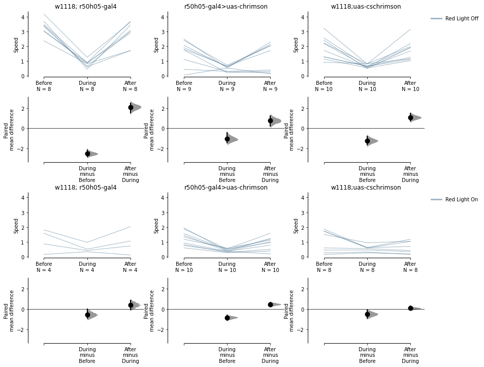

from esploco import esploco
# from espresso import espressoesploco
locomotion analysis for espresso
This is a package that would analyse your countlogs from espresso
Install
pip install esplocothis code is a bit slow. it’s in the process of being refactored
How to use
Download a demo dataset from https://drive.google.com/drive/folders/1v-0Y_xNaec4OhzOqzwE8L2Wng8Cn-_vq?usp=share_link
# esplocoPath='D:\\xusy\\demo'
# el = esploco.esploco(esplocoPath, 0, 120)
# # or if you also have espresso imported
# e = espresso(esplocoPath, expt_duration_minutes=120)
# ele = esploco.esploco(esplocoPath, 0, 120, companionEspObj = e)FileNotFoundError: [Errno 2] No such file or directory: 'D:\\xusy\\demo/'you can plot some small multiples
# el.plotChamberSmallMultiples()
# ele.plotChamberSmallMultiples()Espresso Runs found:
['2021-09-16_10-55-50' '2021-09-20_15-39-12']
plotting 2021-09-16_10-55-50...
plotting 2021-09-20_15-39-12...(array([<Figure size 720x144 with 30 Axes>,
<Figure size 720x144 with 30 Axes>], dtype=object),
array([<Figure size 720x144 with 30 Axes>,
<Figure size 720x144 with 30 Axes>], dtype=object))



you can plot some heat maps
# el.plotMeanHeatMaps(row = 'Status', col = 'Temperature')
# ele.plotMeanHeatMaps(row = 'Status', col = 'Temperature')<Figure size 360x748.8 with 0 Axes>
you can plot some ribbons
# el.plotBoundedLines(col = 'Temperature', colorBy = 'Status')
# ele.plotBoundedLines(col = 'Temperature', colorBy = 'Status')(<Figure size 432x216 with 2 Axes>,
array([[<AxesSubplot:title={'center':' Red Light Off'}, ylabel='Average Speed (mm/s)'>,
<AxesSubplot:title={'center':' Red Light On'}>]], dtype=object),
[<matplotlib.lines.Line2D>,
<matplotlib.lines.Line2D>,
<matplotlib.lines.Line2D>,
<matplotlib.lines.Line2D>],
[<matplotlib.collections.PolyCollection>,
<matplotlib.collections.PolyCollection>,
<matplotlib.collections.PolyCollection>,
<matplotlib.collections.PolyCollection>])
if you have companion an espresso object you can also calculate this
# ele.calculatePeriFeedSpeed(e, monitorWindow=120)recalculating feed duration for feeds...
[------------------------------------------------------------------------------------------------------------------------------------------------------------------------------------------------------------------------------------------------------------------------------------------------------------------------------------------------------------------------------------------------------------------------------------------------------------------------------------------------------------------------------------------------------------------------------------------------------------------------------------------]
putting feeds back into countlog...
[------------------------------------------------------------------------------------------------------------------------------------------------------------------------------------------------------------------------------------------------------------------------------------------------------------------------------------------------------------------------------------------------------------------------------------------------------------------------------------------------------------------------------------------------------------------------------------------------------------------------------------------]
Index(['ID', 'Status', 'Genotype', 'Sex', 'MinimumAge', 'MaximumAge', 'Food1',
'Food2', 'Temperature', '#Flies', 'Starvedhrs', 'Date',
'averageSpeed_mm/s', 'xPosition_mm', 'yPosition_mm', 'inLeftPort',
'inRightPort', 'countLogDate', 'feedLogDate', 'ChamberID'],
dtype='object')
Index(['ChamberID', 'countLogID_Mean', 'FeedDuration_ms_Mean',
'FeedDuration_s_Mean', 'FeedSpeed_nl/s_Mean', 'FeedVol_nl_Mean',
'FeedVol_µl_Mean', 'RelativeTime_s_Mean', 'Valid_Mean',
'Starved hrs_Mean', 'AverageFeedVolumePerFly_µl_Mean',
'AverageFeedCountPerFly_Mean', 'AverageFeedSpeedPerFly_µl/s_Mean',
'120beforeFeedSpeed_mm/s_Mean', 'duringFeedSpeed_mm/s_Mean',
'120afterFeedSpeed_mm/s_Mean', 'revisedFeedDuration_s_Mean',
'120duringPercSpeedGain_Mean', '120afterPercSpeedGain_Mean',
'revisedFeedDuration_min_Mean', 'FeedDuration_ms_Total',
'FeedDuration_s_Total', 'FeedVol_nl_Total', 'FeedVol_µl_Total',
'Valid_Total', 'AverageFeedVolumePerFly_µl_Total',
'AverageFeedCountPerFly_Total', 'AverageFeedSpeedPerFly_µl/s_Total',
'revisedFeedDuration_s_Total', '120duringPercSpeedGain_Total',
'120afterPercSpeedGain_Total', 'revisedFeedDuration_min_Total',
'duringBeforeSpeedRatio', 'afterBeforeSpeedRatio'],
dtype='object')
plotting PeriFeedDiagonal
plotting pairedSpeedPlots
dabest version = 0.3.9999
